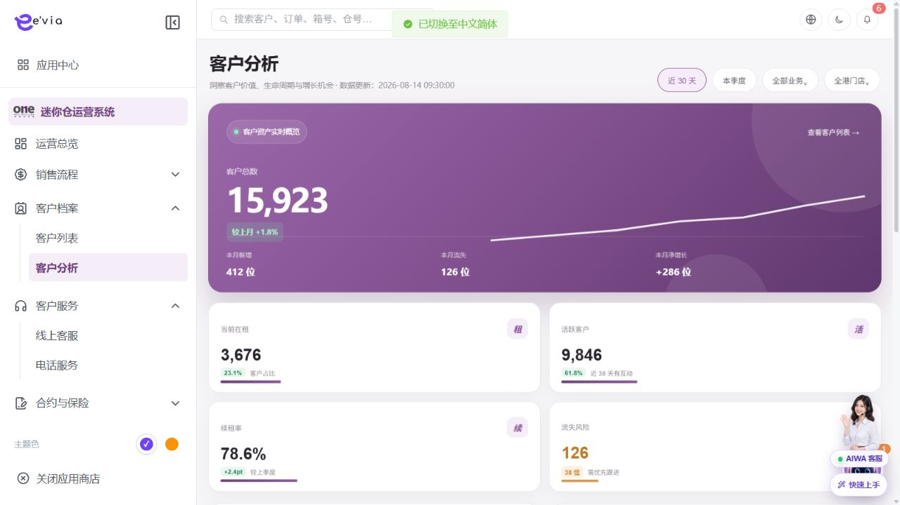

PRODUCT REQUIREMENTS
客户分析 PRD
下载 Word 文档客户分析 PRD
运营后台统计分析需求规格 · V2.4 · 2026-09-09
1 文档目标与范围
按统一口径分析客户规模、增长、在租、活跃、续租、流失风险和沉默分层，为经营判断和客户下钻提供可核对的数据。 本模块只定义统计查询、口径说明、趋势交互、明细下钻和报表导出，不提供客户或客群的新增、编辑表单。
| 属性 | 内容 |
|---|---|
| 文档编号 | OS-OPS-PRD-11 |
| 版本 | V2.4 2026-09-09 |
| 统计时区 | Asia/Hong_Kong |
| 原型数据说明 | 演示数字只用于确认布局，验收使用分子分母和明细对账 |
1.1 原型界面依据
本模块界面直接取自 AiwaBot产品原型-v3.2.html。真实截图及功能点对应说明见“界面与功能对应说明”。
2 界面与权限
2.1 界面与功能对应说明
以下真实原型截图用于确定页面区域、入口和交互位置；字段校验、状态变化和服务端处理以本PRD功能规格为准。

| 说明项 | 界面辅助说明 |
|---|---|
| 对应功能点 | OS-OPS-PRD-11-FP01 切换统计范围；OS-OPS-PRD-11-FP02 查看指标口径；OS-OPS-PRD-11-FP03 查看趋势明细；OS-OPS-PRD-11-FP04 下钻客户明细；OS-OPS-PRD-11-FP05 导出分析报告 |
| 页面区域 | 顶部为周期和范围筛选，中部为指标卡与图表，内容区提供异常、趋势和下钻入口。 |
| 交互要求 | 筛选变化后组件分别进入加载态；图表显示口径、截止时间和空态。点击卡片、图例或数据点时携带当前筛选下钻。 |
| 状态与权限 | 动作由allowedActions控制；无权限隐藏入口，接口仍执行403校验并记录审计。 |
| 角色 | 数据范围 | 可用能力 |
|---|---|---|
| 运营管理员 | 全部或获授权区域 | 查看指标、口径、下钻和导出 |
| 区域或门店负责人 | 所属区域或门店 | 查看和导出授权数据 |
| 销售及客户运营 | 本人或团队客户 | 查看指标和脱敏明细 |
| 数据管理员 | 平台统计域 | 维护口径、质量和重算任务 |
3 页面结构与全局筛选
•
顶部展示更新时间及周期、业务、区域和门店筛选
•
客户净增长概览展示总数、新增、流失、净增长和趋势
•
经营指标卡展示在租、活跃、续租率和流失风险
•
下方展示新增与留资趋势、沉默分层及沉默迁移
•
组件独立返回截止时间、metricVersion和状态
| 筛选项 | 默认与选项 | 统计规则 |
|---|---|---|
| 统计周期 | 默认近30天；支持近7天、近30天、近90天、本月、本季度和自定义。 | Asia/Hong_Kong自然日；结束日含当天；当前周期对比上一相邻等长周期。 |
| 业务类型 | 默认全部业务；可选迷你仓、迷你箱及衍生商品。 | 只过滤具有对应有效业务关系的数据；客户总数应显示过滤后客户全集。 |
| 区域 | 默认用户dataScope内全部区域。 | 区域取统计事实发生时所属门店的区域快照，历史数据不随门店改区回写。 |
| 店铺 | 默认区域内全部门店，可多选。 | 与区域联动；无权限门店不返回选项，深链传入越权门店时返回403。 |
| 生命周期 | 可选潜在、活跃、在租、历史等已发布字典。 | 按asOfTime的生命周期快照过滤，并返回lifecycleVersion。 |
| 价值分层 | 按已发布价值模型选择层级。 | 接口必须返回valueModelVersion；模型切换后不与旧版本直接比较。 |
| 风险等级 | 默认全部；支持低、中、高。 | 按当前riskModelVersion过滤，风险数值和等级均用于下钻。 |
4 指标统计口径
| 指标 | 名称 | 业务定义 |
|---|---|---|
| CA01 | 客户总数 | 截至asOfTime已建立且未被物理清除的唯一客户数。合并客户只保留主customerId。 |
| CA02 | 本期新增客户 | 统计周期内首次建立主客户档案的唯一客户数。 |
| CA03 | 本期流失客户 | 本期最后一份有效租约结束且截至asOfTime没有其他有效租约的唯一客户数。 |
| CA04 | 本期净增长 | 本期新增客户数减本期流失客户数。 |
| CA05 | 当前在租客户 | 截至asOfTime至少有一份处于有效租用状态的仓位或迷你箱租约的唯一客户数。 |
| CA06 | 活跃客户 | 所选观察窗口内至少发生一次有效客户主动行为的唯一客户数。 |
| CA07 | 续租率 | 到期应续租租约中已完成续租的租约比例。该指标按租约统计，不按客户统计。 |
| CA08 | 流失风险客户 | 截至asOfTime被当前风险模型判为中高风险且仍属有效客户的唯一客户数。 |
| CA09 | 沉默客户 | 最后一次有效互动距asOfTime达到沉默阈值的唯一客户数。 |
4.1 计算公式与时间口径
| 指标 | 计算公式 | 时间口径 |
|---|---|---|
| CA01 | COUNT DISTINCT customerId | 库存指标，取asOfTime快照 |
| CA02 | COUNT DISTINCT customerId WHERE firstCreatedAt in period | 按客户首次创建业务时间 |
| CA03 | COUNT DISTINCT customerId meeting churn condition | 按最后有效租约实际结束时间 |
| CA04 | CA02 - CA03 | 沿用CA02和CA03周期 |
| CA05 | COUNT DISTINCT customerId with active rental | 库存指标，取asOfTime快照 |
| CA06 | COUNT DISTINCT customerId with qualified activity | 按事件occurredAt落入窗口 |
| CA07 | 已完成续租租约数 ÷ 到期应续租租约数 × 100% | 分母按原租约到期日，分子按续租完成状态 |
| CA08 | COUNT DISTINCT customerId WHERE riskLevel in configured levels | 每日快照，显示modelVersion |
| CA09 | COUNT DISTINCT customerId WHERE silentDays >= threshold | 按最后有效互动时间和asOfTime计算自然日 |
4.2 排除规则与下钻
| 指标 | 排除与去重规则 | 下钻结果 |
|---|---|---|
| CA01 | 排除测试、重复从档和已合并从档 | 客户档案列表 |
| CA02 | 排除导入回滚、测试及合并后重复客户 | 按首次创建时间下钻 |
| CA03 | 转仓、续租衔接及仅取消预约不计流失 | 按流失日期和原租约下钻 |
| CA04 | 允许为负数，不另行去重 | 分别打开新增和流失清单 |
| CA05 | 取消、草稿、退款关闭、测试租约不计；同客多租约只计一人 | 在租客户及有效租约 |
| CA06 | 排除系统通知、群发送达、机器人自动消息和内部操作 | 客户及最近有效行为 |
| CA07 | 转仓关闭、提前退租、测试及审批豁免租约排除 | 应续租租约与续租结果 |
| CA08 | 已流失、冻结测试和无有效业务关系客户排除 | 风险等级、原因因子和负责人 |
| CA09 | 无可用联系方式、退订、黑名单及人工接待保护期客户按配置排除 | 沉默层级及最后有效互动 |
•
比例同时返回numerator和denominator
•
库存指标使用截止时点，流量指标使用业务发生时间
•
跨组织汇总从明细重新去重，禁止平均下级比例
•
零分母显示—，合法零值显示0
5 图表统计与交互
| 图表 | 名称 | 展示内容 | 数据口径 | 交互与对账 |
|---|---|---|---|---|
| CH01 | 客户净增长概览 | 客户总数、本期新增、本期流失和净增长 | CA01至CA04 | 折线展示周期末客户总量；卡片变化使用上一可比周期。 |
| CH02 | 经营客户指标卡 | 当前在租、活跃客户、续租率、流失风险 | CA05至CA08 | 人数显示整数，比例最多两位小数；续租率变化使用百分点pp。 |
| CH03 | 新增客户与留资趋势 | 按日、周或月展示新增客户数与留资客户数 | 新增客户复用CA02；留资客户按标准化手机号、邮箱或customerId去重 | 数据点悬停显示日期、两项原始值和截止时间；切换粒度后重新聚合原始事实。 |
| CH04 | 沉默客户分层 | 轻度30至60天、中度61至90天、重度91天及以上 | 各层人数 ÷ 沉默客户总数 | 区间左闭右闭且互斥；层级合计必须等于CA09，阈值和版本可查看。 |
| CH05 | 沉默客户流动 | 新进入沉默、成功唤醒、沉默加深 | 按客户在本期首尾快照的层级迁移统计 | 同一客户每种迁移在一个周期只计一次；成功唤醒后再次沉默属于下一次迁移。 |
•
缺失日期补零，数据源失败显示断点
•
图例开关只影响显示，不改变总计和导出
•
悬停显示时间、原始值、分子分母和截止时间
•
点击数据点使用同一粒度和快照下钻
•
原型演示数字无法复算时不得照录
6 功能点详细设计
| 功能 | 功能点 | 系统要求 |
|---|---|---|
| FP01 | 切换统计范围 | 统一queryContext并行刷新组件 |
| FP02 | 查看指标口径 | 展示公式、分子分母、排除项和版本 |
| FP03 | 查看趋势明细 | 切换粒度并悬停查看原始值 |
| FP04 | 下钻客户明细 | 携带筛选、asOfTime、metricVersion和bucket |
| FP05 | 导出分析报告 | 冻结snapshotId、权限范围和口径版本 |
7 数据时间刷新与对比
| 主题 | 规则 |
|---|---|
| 时间边界 | Asia/Hong_Kong自然日；startAt包含，endAt不包含 |
| 截止时间 | 页面显示最早可靠watermark，组件保留独立watermark |
| 刷新频率 | 事实每15分钟增量，续租与风险模型每日重算 |
| 迟到数据 | 进入下次重算，已归档报告不可改写 |
| 对比规则 | 未完整周期对比上一周期相同已过时长 |
| 口径变更 | 版本变化时停止直接比较并提示版本说明 |
8 数据处理链路
•
业务域产生带eventId的事实事件
•
接入层去重并映射主customerId
•
统计层按口径版本和截止时间计算
•
查询服务执行dataScope并返回分子分母
•
导出冻结snapshotId并审计
•
源数据更正后定向失效缓存
9 跨端数据规则
| 规则 | 要求 |
|---|---|
| OS-OPS-PRD-11-X01 | 客户小程序上报登录、回复、提交表单、下单和付款等已定义行为事件，只传统计所需字段 |
| OS-OPS-PRD-11-X02 | AIWA只上报会话标识、客户标识、事件类型和发生时间，消息原文不进入分析宽表 |
| OS-OPS-PRD-11-X03 | 下钻客户列表由客户档案模块承载并复用同一筛选、asOfTime和metricVersion |
10 接口与数据契约
| 契约 | 路径 | 要求 |
|---|---|---|
| 指标总览 | GET /ops/v1/customer-analytics/summary | 组件状态、分子分母、版本和watermark |
| 图表查询 | GET /ops/v1/customer-analytics/charts/{chartId} | 粒度、序列、原始值和下钻参数 |
| 口径说明 | GET /ops/v1/customer-analytics/metrics/{metricId}/definition | 定义、公式、排除项和版本 |
| 指标下钻 | GET /ops/v1/customer-analytics/drilldowns/{metricId} | 同筛选同快照的分页客户明细 |
| 创建导出 | POST /ops/v1/customer-analytics/reports | 幂等并冻结snapshotId和权限范围 |
| 导出任务 | GET /ops/v1/customer-analytics/reports/{reportId} | 状态、失败原因和签名地址 |
11 异常与边界处理
| 场景 | 处理 |
|---|---|
| 分母为零 | 显示—并返回ZERO_DENOMINATOR |
| 无数据 | 返回成功和空序列 |
| 数据源延迟 | 仅受影响组件标记过期 |
| 组件失败 | 保留其他组件并允许独立重试 |
| 口径变化 | 停止直接比较 |
| 下钻不一致 | 禁止跨snapshotId拼接并告警 |
| 无明细权限 | 隐藏下钻并返回403 |
| 导出超时 | 显示任务编号并幂等重试 |
12 验收标准
| 验收ID | 验收条件 |
|---|---|
| OS-OPS-PRD-11-AC01 | 全部指标返回定义、原始值、分子、分母、时间锚点、版本和watermark |
| OS-OPS-PRD-11-AC02 | 跨门店多租约客户按customerId去重 |
| OS-OPS-PRD-11-AC03 | 净增长等于新增减流失 |
| OS-OPS-PRD-11-AC04 | 续租率按租约统计且变化使用pp |
| OS-OPS-PRD-11-AC05 | 沉默层级互斥并合计等于沉默客户数 |
| OS-OPS-PRD-11-AC06 | 零分母、零值和失败状态严格区分 |
| OS-OPS-PRD-11-AC07 | 任一指标下钻人数与分子一致 |
| OS-OPS-PRD-11-AC08 | 页面、下钻和导出使用同一筛选及snapshotId |
| OS-OPS-PRD-11-AC09 | 测试数据通过指标与明细双向对账 |
| OS-OPS-PRD-11-AC10 | 不存在新增编辑客户或客群表单 |
13 研发分工
| 工作包 | 交付内容 |
|---|---|
| 前端 | 筛选、指标、趋势、口径、组件状态、下钻和导出 |
| 分析服务 | 查询、下钻、权限、缓存、导出和失效事件 |
| 数据平台 | 事实、归一、计算、快照、重算和质量告警 |
| 业务域 | 提供客户、租约、续租、流失和互动事实 |
| 测试 | 公式、去重、边界、汇总、对账、权限和降级 |